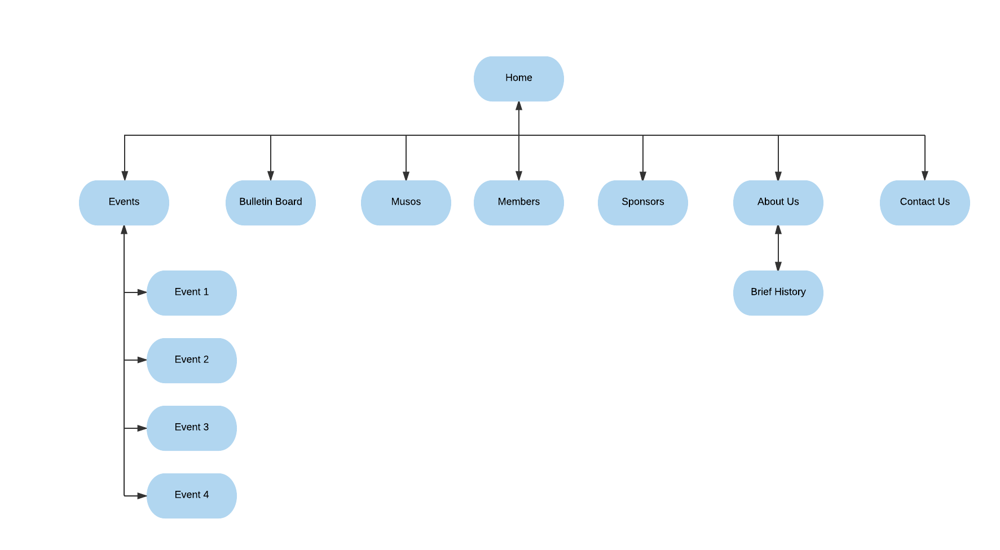
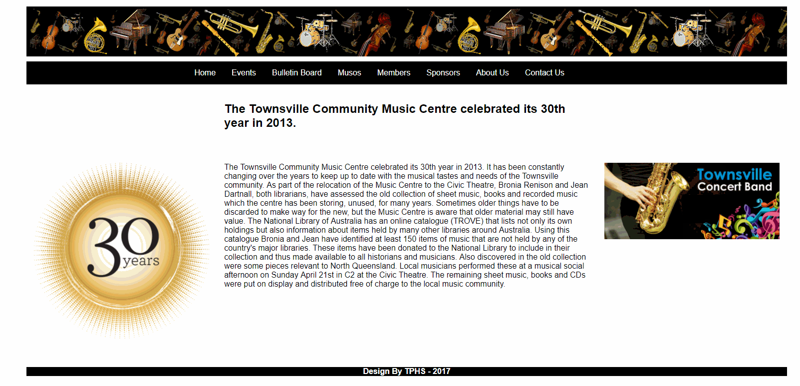
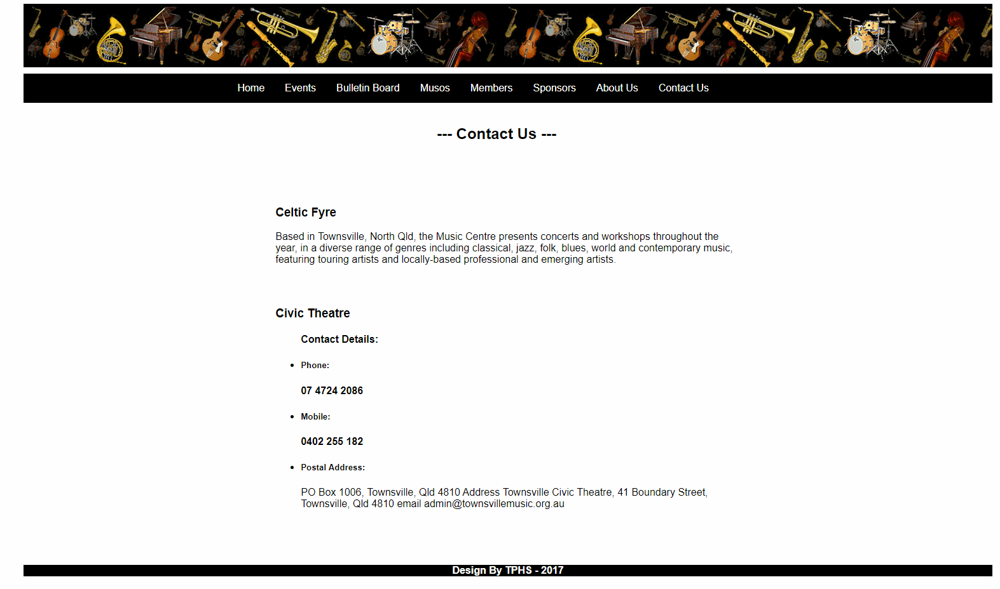
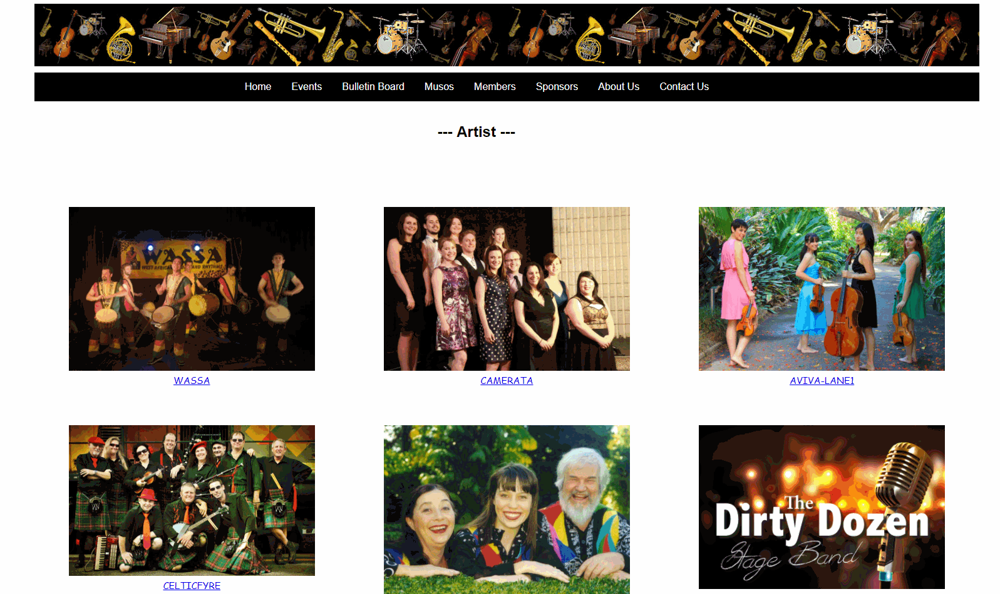

Members:
The goal is to purpose an efficient, easily accessible and newly upgraded website for Townville Community Music centre to increase the engagement of members in activities e.g. volunteering for administration, organizing and promoting concerts and workshops. It will provide easy access to the users to check the upcoming events and also increase performance opportunities to interested musicians/singers, memberships. One of the goal is also to increase ticket sales, especially to the general public.
Certain parameters are considered to evaluate the success and efficiency of the upgraded website. Below are some of them :
The target audience will be people with specialized tastes which will include the youth audience and mature audience. The events which include Jazz, Rock and Western music will be dedicated to grabbing the attention of youth audience, whereas as a classical and traditional kind of music events will be conducted to attract the mature audience.

|  |  |  |
|---|
provide links here to your 3 comps (images or HTML pages)